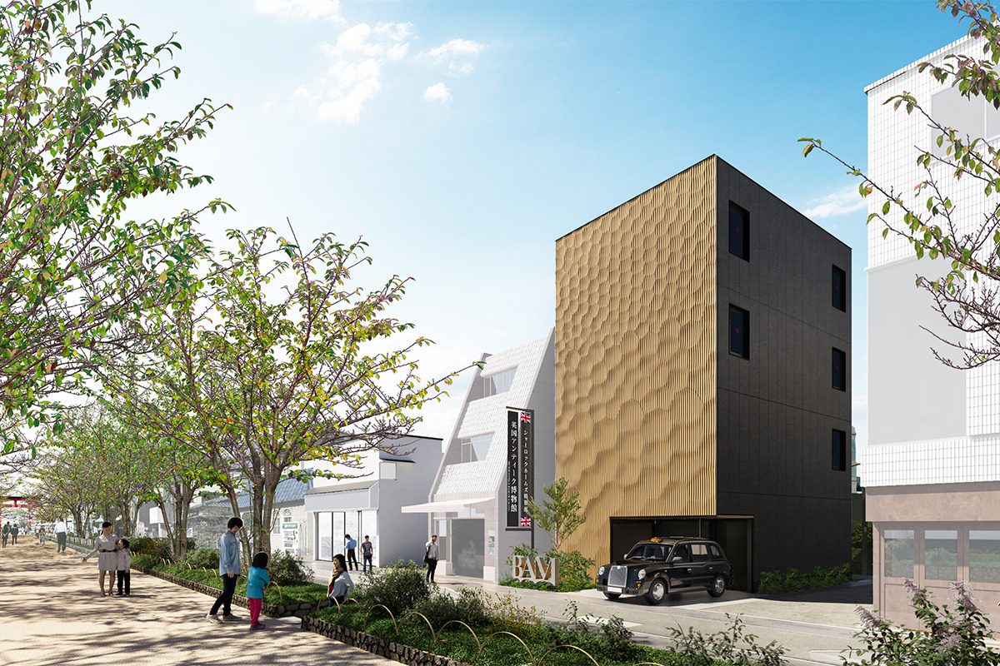
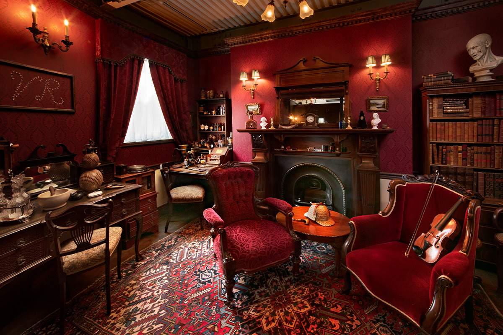
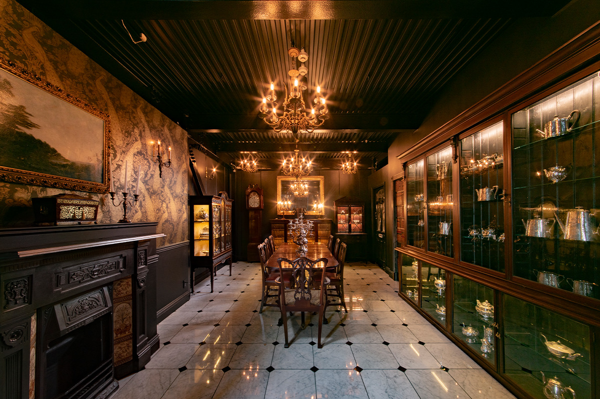
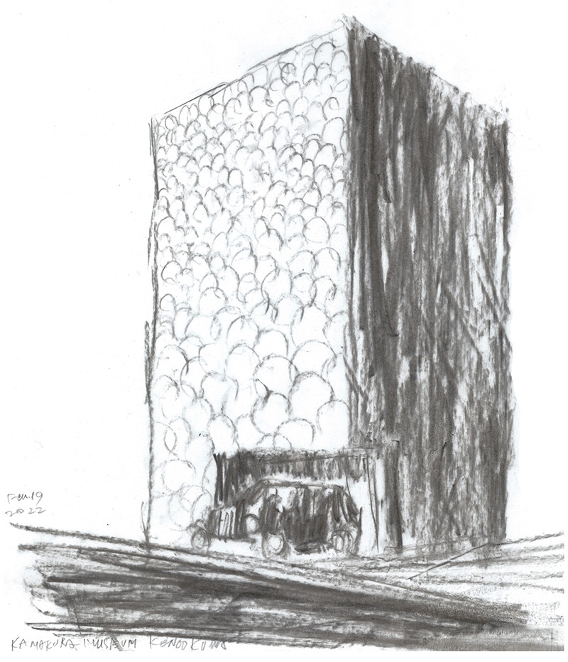
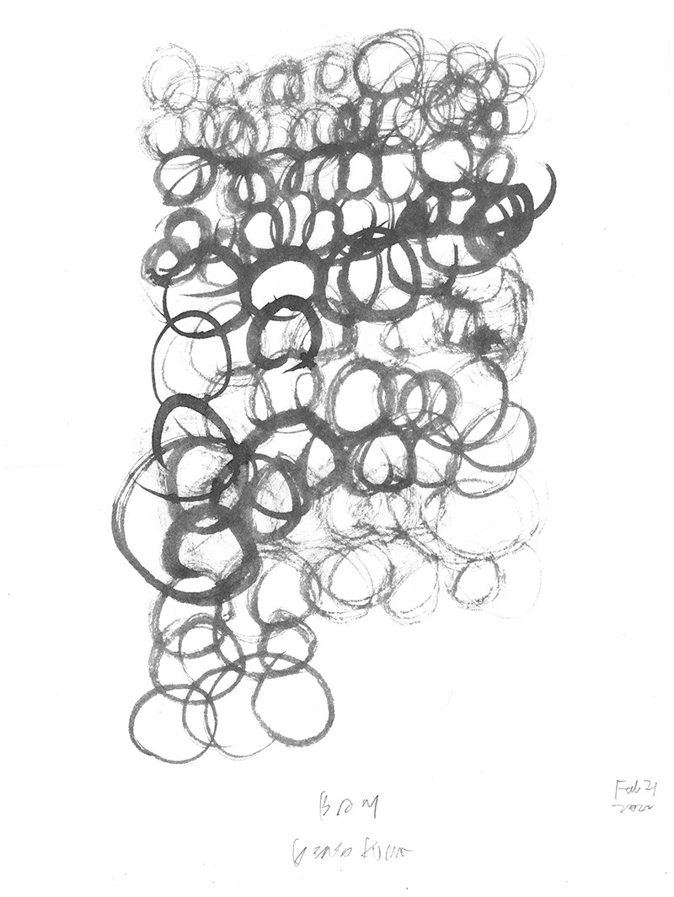
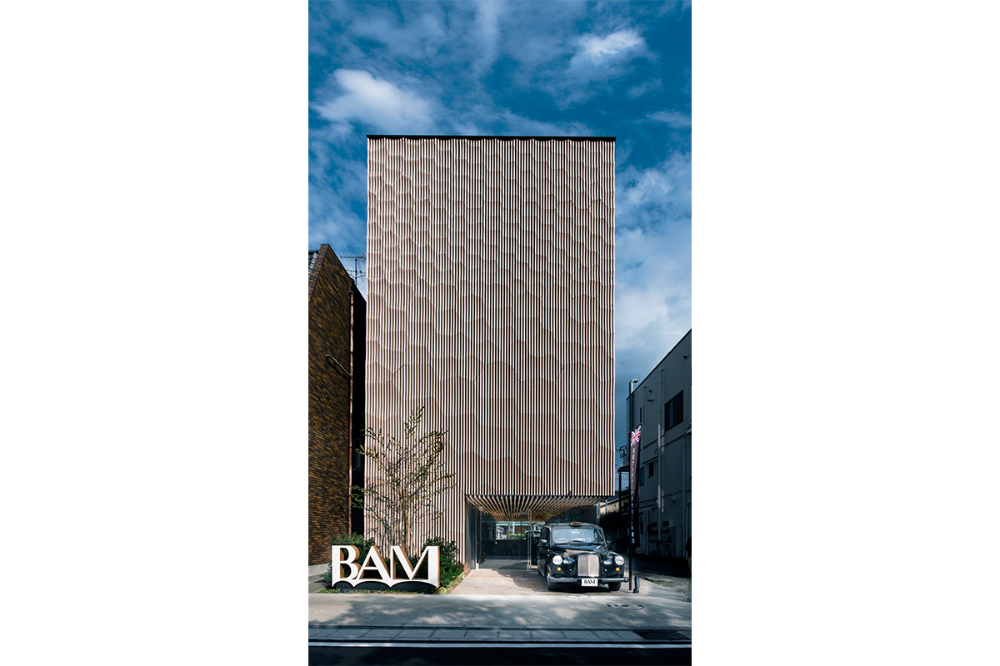

Префектура Канагава · Камакура · музей
BAM Kamakura: музей британского антиквариата в здании Кэнго Кумы

В Камакуре, у аллеи, ведущей к святилищу Цуругаока Хатимангу, в сентябре 2022 года открылся музей британского антиквариата. Здание для него построил Кэнго Кума, а вещи старше ста лет его основатель собирал в Англии три десятилетия.
Музей
Вещи, которые передают дальше
British Antique Museum Kamakura, или коротко BAM Kamakura, открылся 23 сентября 2022 года. Музей задумывали как послание следующим поколениям: старые вещи стоит беречь и передавать, а вместе с ними и память о людях, которые их сделали. Здание спроектировал Кэнго Кума, а в залах выставлен настоящий британский антиквариат возрастом больше ста лет из собрания основателя музея Масаоми Добаси.
Каждый этаж посвящён своей эпохе. На одном воссоздана комната Шерлока Холмса, а для первого этажа в 2022 году было задумано «Black Cab Cafe», первое в Японии кафе в лондонском такси.
История
Почему Камакура и Британия
Британию и Камакуру связывает Национальный траст. Это движение возникло в Англии в викторианскую эпоху: исторически ценные земли и здания выкупают на пожертвования и сохраняют навсегда. Так удалось уберечь множество живописных мест.
В Японии идеи траста впервые применили именно в Камакуре. В 1964 году появился план застроить холмы за святилищем Цуругаока Хатимангу. Против выступил писатель Дзиро Осараги (1897–1973), автор исторических романов, много лет живший в Камакуре и знавший о британском движении. Он собрал пожертвования и остановил застройку. После этого в Японии приняли закон о сохранении древних столиц, и под защитой оказались многие природные места и исторические постройки страны.
Коллекция
Дом с красной дверью
Собирать антиквариат Добаси начал в начале 1990-х годов. В Японии тогда был пик «экономики мыльного пузыря», и, по его словам, людей и вещи затягивало в этот водоворот. Его сестра училась в Англии и жила в принимающей семье, и он поехал её навестить.

Семья жила в Стратфорде-на-Эйвоне, родном городке Шекспира в полутора часах езды к северу от Лондона. Там стояли дома, которым по сто и двести лет. Хозяин дома в георгианском стиле с запоминающейся красной дверью оказался настоящим английским джентльменом и сводил гостя в джентльменский клуб. Подлинная старая мебель и вещи, которыми по-прежнему пользуются и которые передают дальше, потрясли Добаси: в них была культура и то, что, как ему казалось, Япония в те годы потеряла.
«Антиквариат это вещи, сделанные руками человека и прожившие больше ста лет. Когда я это узнал, то понял: собирать их и передавать дальше значит передавать и мысли людей, которые их создали. С этого и началось моё путешествие за антиквариатом»
основатель музея

Архитектура
Маленький музей Кэнго Кумы
В 2018 году Кэнго Кума построил в шотландском Данди музей дизайна V&A Dundee, первый такой крупный музей в Шотландии. Здание вырастает из земли, повторяя очертания шотландских утёсов. Внутри воссоздана чайная комната архитектора Чарльза Ренни Макинтоша (1868–1928). Этот шотландский мастер модерна находился под влиянием японской культуры. Выходит, главный экспонат большого британского музея связан с восточным дизайном, а построил музей японец. На следующий год Кума закончил Новый национальный стадион для Олимпиады в Токио.


Когда-то Кума выпустил книгу «Маленькая архитектура». Её мысль в том, что малые единицы, вроде чайной комнаты, складываясь, образуют большое целое. Сопоставление большого британского музея в Данди и маленького музея в Камакуре делает эту мысль ещё нагляднее.
Фасад целиком обшит деревом со следами резца. Образом для него стала камакура-бори, местная резьба по дереву под лаком. Чтобы здание выглядело чистым и цельным, окон на фасаде нет совсем. На лестницах и перилах использована старая древесина, а стены сплошь увешаны старинными картинами.
По плану 2022 года залы распределены так:
- 1-й этаж: кафе «Black Cab Cafe» в лондонском такси
- 2-й этаж: георгианская эпоха (1714–1830), серебро и мебель
- 3-й этаж: времена Артура Конан Дойла (1859–1930), автора рассказов о Шерлоке Холмсе, и воссозданная комната сыщика
- 4-й этаж: викторианская эпоха (1837–1901), граммофоны, фортепиано, арфы и другие вещи
В 2026 году на официальном сайте музея первый этаж значится как музейный магазин.
Слово архитектора
Здание, которое должно быть чистым
«Британию и Японию связывает многое. Шотландский архитектор Чарльз Ренни Макинтош под влиянием японской архитектуры создал чайную комнату, и её дизайн по сути японский. Эта комната воссоздана в V&A Dundee, который я построил в 2018 году. Там рядом стоят британский антиквариат и современный электромобиль, старое и новое вместе»
Кэнго Кума
Музей стоит у Данкадзуры, старинной аллеи, ведущей к святилищу Цуругаока Хатимангу. В его залах собраны подлинные вещи, вобравшие в себя больше века.
«Поэтому и здание должно быть чистым до конца. Я долго обдумывал проект, в итоге убрал все окна, оставил простую форму и сделал фасад по мотивам камакура-бори, символа местной культуры. Я верю, что это здание полюбят как место культуры, которое в Камакуре будут бережно передавать дальше»
Кэнго Кума

В Камакуре стоит зайти сюда, чтобы увидеть британский антиквариат и само здание Кэнго Кумы.
BAM Kamakura (British Antique Museum Kamakura)
- Адрес
- префектура Канагава, Камакура, Юкиносита, 1-11
- Даты
- открыт 23 сентября 2022 года, четыре этажа
- Часы работы
- 10:00–17:00, вход до 16:30 (официальный сайт, 2026)
- Выходные
- без выходных (официальный сайт, 2026)
- Цены / Вход
- взрослые 1300 иен, школьники средних и старших классов 1000 иен, младшие школьники 500 иен, дошкольников не пускают (официальный сайт, 2026)
- Сайт
- bam-kamakura.com